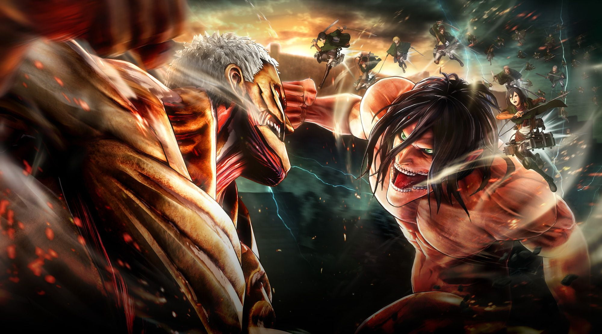

Attack On Titan
The story of Attack on Titan centers on a civilization inside three circular walls. According to the knowledge propagated locally, it is the last surviving vestige of human civilization. Its inhabitants, known as Eldians, have been led to believe that over one hundred years ago, humanity was driven to the brink of extinction after the emergence of humanoid giants called Titans, who attack and eat humans on sight. The last remnants of humanity retreated behind three concentric walls and enjoyed roughly a century of peace. Within the walls, the thought of venturing outside is strongly frowned upon and discouraged. To combat Titans, the country's military employs Vertical Maneuvering Equipment (VME), also called Omni-Directional Maneuvering Gear (ODM Gear): a set of waist-mounted grappling hooks and gas-powered propulsion enabling immense mobility in three dimensions. Swords made of ultrahard steel are used in conjunction with the gear, and eventually rocket launcher-like weapons called Thunder Spears are also developed.
There exist different types of Titans. Pure Titans are the weakest and most generic Titans, whose behavior is easy to predict, making them easy to kill. Abnormal Titans are Pure Titans whose behavior is more difficult to predict, making them far more dangerous. The Nine Titans, also known as Titan Shifters (Attack, Colossal, Armored, Female, Beast, Jaw, Cart, War Hammer, and Founding), are the strongest Titans; each is able to shift back and forth between human and Titan form to access their Titan's abilities. Many Titan Shifters also possess the ability to harden certain parts of their bodies at will, typically in order to make them virtually impenetrable, or to strengthen their blows during combat.
Pure Titans are created by injecting Eldians with Pure Titan spinal fluid. If a Pure Titan eats the human body of a person who possesses one of the Nine Titans, said Eldian will revert to human form and gain that Shifter's powers, whereupon they are cursed to live only 13 more years. If their powers are not inherited by another Eldian before their death, their powers will be inherited by an Eldian baby born shortly thereafter, regardless of distance or blood-relations. As the story progresses, the true nature of the Titans and the existence of civilization outside the walls is revealed to the characters and the audience.

click